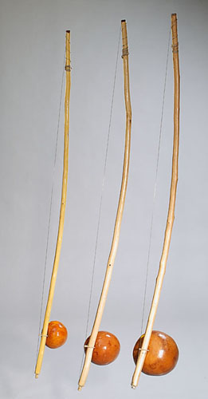

A capoeira ou capoeiragem é uma expressão cultural brasileira que mistura arte marcial, esporte, cultura popular e música. Desenvolvida no Brasil por descendentes de escravos africanos, é caracterizada por golpes e movimentos ágeis e complexos, utilizando primariamente chutes e rasteiras, além de cabeçadas, joelhadas, cotoveladas, acrobacias em solo ou aéreas.
Uma característica que distingue a capoeira da maioria das outras artes marciais é a sua musicalidade. Praticantes desta arte marcial brasileira aprendem não apenas a lutar e a jogar, mas também a tocar os instrumentos típicos e a cantar. Um capoeirista que ignora a musicalidade é considerado incompleto.
Considera-se que a capoeira tenha surgido em fins do século XVI no Quilombo dos Palmares, situado na então Capitania de Pernambuco.
A Roda de Capoeira foi registrada como bem cultural pelo IPHAN no ano de 2008, com base em inventário realizado nos estados da Bahia, de Pernambuco e do Rio de Janeiro, considerados berços desta expressão cultural. E em novembro de 2014, recebeu o título de Patrimônio Cultural Imaterial da Humanidade pela UNESCO.
Atualmente
Hoje em dia, a capoeira se tornou não apenas uma arte ou um aspecto cultural, mas uma verdadeira exportadora da cultura brasileira para o exterior. Presente em dezenas de países em todos os continentes, todo ano a capoeira atrai ao Brasil milhares de alunos estrangeiros e, frequentemente, capoeiristas estrangeiros se esforçam em aprender a língua portuguesa em um esforço para melhor se envolver com a arte. Mestres e contra-mestres respeitados são constantemente convidados a dar aulas especiais no exterior ou até mesmo a estabelecer seu próprio grupo. Apresentações de capoeira, geralmente administradas em forma de espetáculo, acrobáticas e com pouca marcialidade, são realizadas no mundo inteiro.
O aspecto marcial ainda se faz muito presente e, como nos tempos antigos, ainda é sutil e disfarçado. A malandragem é sempre presente, capoeiristas experientes raramente tiram os olhos de seus oponentes em um jogo de capoeira, já que uma queda pode chegar disfarçada até mesmo em um gesto amigável. Símbolo da cultura afro-brasileira, símbolo da miscigenação de etnias, símbolo de resistência à opressão, a capoeira mudou definitivamente sua imagem e se tornou fonte de orgulho para o povo brasileiro.
Roda de capoeira
A roda de capoeira é um círculo de capoeiristas com uma bateria musical em que a capoeira é jogada, tocada e cantada. A roda serve tanto para o jogo, divertimento e espetáculo, quanto para que capoeiristas possam aplicar o que aprenderam durante o treinamento. Os capoeiristas se perfilam na roda de capoeira cantando e batendo palmas no ritmo do berimbau enquanto dois capoeiristas jogam capoeira. O jogo entre dois capoeiristas pode terminar ao comando do tocador de berimbau ou quando algum outro capoeirista da roda "compra o jogo", ou seja, entra entre os dois e inicia um novo jogo com um deles.
Em geral, o objetivo do jogo da capoeira não é o nocaute ou destruir o oponente. O maior objetivo do capoeirista ao entrar em uma roda é a queda, ou seja, derrubar o oponente sem ser golpeado, preferencialmente com uma rasteira. Na maioria das vezes, entre o jogo de um capoeirista mais experiente e um novato, o capoeirista experiente prefere mostrar sua superioridade "marcando" o golpe no oponente, ou seja, freando o golpe um instante antes de completá-lo. Entre dois capoeiristas experientes, o jogo poderá ser muito mais agressivo e as consequências mais graves.
A ginga é o movimento básico da capoeira, mas além da ginga, também são muito comuns os chutes em rotação, rasteiras, floreios (como o aú ou a bananeira), golpes com as mãos, cabeçadas, esquivas, acrobacias (como o salto mortal), giros apoiados nas mãos ou na cabeça e movimentos de grande elasticidade.
Música
A música é um componente fundamental da capoeira. Foi introduzida como forma de ludibriar os escravizadores, fazendo-os acreditar que os escravos estavam dançando e cantando, quando na verdade estavam desenvolvendo e treinando uma arte marcial para se defenderem. Componente fundamental de uma roda de capoeira, ela determina o ritmo e o estilo do jogo que é jogado. A música é criada pela bateria e pelo canto (solista ou em coro), geralmente acompanhados de um bater de palmas.
A bateria é, tradicionalmente, composta por três berimbaus, dois pandeiros e um atabaque, mas o formato pode variar excluindo-se ou incluindo-se algum instrumento, como o agogô e o ganzuá. Um dos berimbaus define o ritmo e o jogo de capoeira a ser desenvolvido na roda. Desta maneira, é a música que comanda a roda de capoeira, não só no ritmo mas também no conteúdo.
Toques de capoeira
|  |
O toque de capoeira é o ritmo tocado pelos berimbaus, seguidos pelos demais instrumentos. Podem ser executados desde bem lentamente (como no toque de Angola), induzindo a um jogo mais lento e estratégico, até bastante acelerados (como em São Bento Grande), induzindo a um jogo rápido, ágil e acrobático. Podem também ter outros significados que vão além do jogo ou comandar uma roda restrita, como o toque de Iúna.
Em uma roda de capoeira, a forma mais usual é iniciar com o toque de Angola e subir o ritmo gradualmente, encerrando com o toque São Bento Grande em alta velocidade. Contudo não existem regras, uma roda pode manter sempre o mesmo toque ou mesmo inverter, começando de modo acelerado e terminando de modo lento.
Alguns dos toques mais comumente utilizados:
- Toque de Angola;
- São Bento Pequeno;
- São Bento Grande de Angola;
- São Bento Grande da Regional;
- Iúna;
- Cavalaria;
- Samango;
- Santa Maria;
- Benguela;
- Amazonas;
- Idalina.
Estilos
Falar sobre estilos na capoeira é um argumento difícil, visto que nunca existiu uma unidade na capoeira original, ou um método de ensino antes da década de 1920. De qualquer forma, a divisão entre dois estilos e um subestilo é amplamente aceita.
Angola
Capoeira Angola refere-se a toda a capoeira que mantém as tradições da época anterior à da criação do estilo Regional. Em outras palavras é a capoeira mais tradicional. Existindo em diversas áreas do país desde tempos mais remotos, notadamente no Rio de Janeiro, em Salvador e em Recife, é impossível precisar onde e quando a capoeira Angola começou a tomar sua forma atual.
A Angola é o estilo mais próximo de como os escravos lutavam ou jogavam a capoeira. Caracterizada por ser estratégica, com movimentos furtivos executados perto do solo ou em pé dependendo da situação a enfrentar, ela enfatiza as tradições da malícia, da malandragem e da imprevisibilidade da capoeira original. Alguns angoleiros afirmam que seu domínio é muito complicado, envolvendo não só a parte mecânica do jogo mas também características como sutileza, o subterfúgio, a dissimulação, a teatralização, a mandinga ou mesmo a brincadeira para superar o oponente. A bateria típica em uma roda de capoeira Angola é composta por três berimbaus, dois pandeiros, um atabaque, um agogô e um ganzuá.
Regional
A capoeira regional começou a nascer na década de 1920, do encontro de mestre Bimba com seu futuro aluno, José Cisnando Lima. Ambos acreditavam que a capoeira estaria perdendo seu valor marcial e chegaram à conclusão de que uma reestruturação era necessária. Bimba criou, então, sequências de ensino e metodizou o ensino de capoeira. Aconselhado por Cisnando, Bimba chamou sua capoeira de Luta Regional Baiana, visto que a capoeira ainda era ilegal na época.
A base da "capoeira regional" é a capoeira tradicional mais enxuta, com menos subterfúgios e maior objetividade. O treinamento era mais focado no ataque e no contra-ataque, com muita importância para a precisão e a disciplina. Bimba também incorporou alguns golpes de outras artes marciais, notadamente o batuque, antiga luta de rua praticada por seu pai. O uso de acrobacias e saltos era mínimo: um dos fundamentos era sempre manter ao menos uma base de apoio. Como dizia Mestre Bimba, "o chão é amigo do capoeirista". A capoeira regional também introduziu, na capoeira, o conceito de graduações. Na academia de mestre Bimba, existiam três níveis hierárquicos: calouro, formado e formado especializado. As graduações eram determinadas por um lenço amarrado na cintura.
Capoeira contemporânea
A partir da década de 1970 um estilo misto começou a adquirir notoriedade, com alguns grupos unindo os fatores que consideravam mais importantes da Regional e da Angola. Notadamente mais acrobático, este estilo misto é visto por alguns como a evolução natural da capoeira, por outros como descaracterização ou até mesmo mal-interpretação das tradições capoeirísticas. Com o tempo, toda capoeira que não seguia as linhas da Regional ou da Angola, mesmo as amalgamadas com outras artes marciais, passou a se denominar "Contemporânea".
Fonte: https://pt.wikipedia.org/wiki/Capoeira